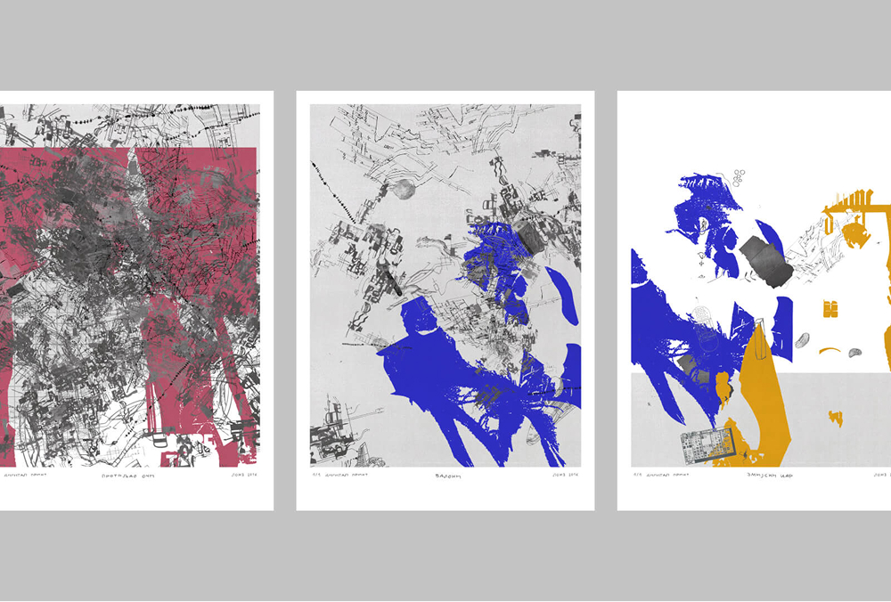
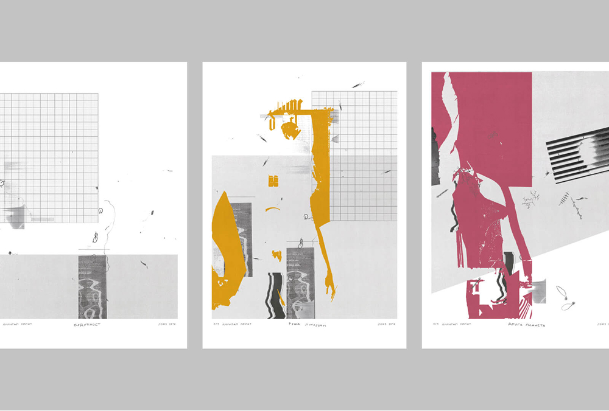
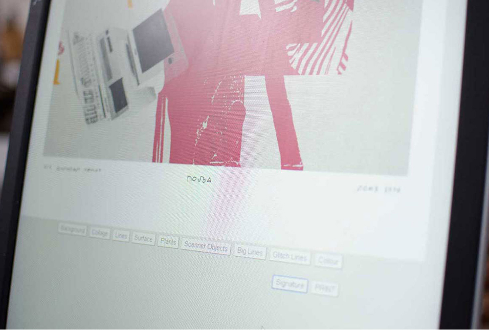
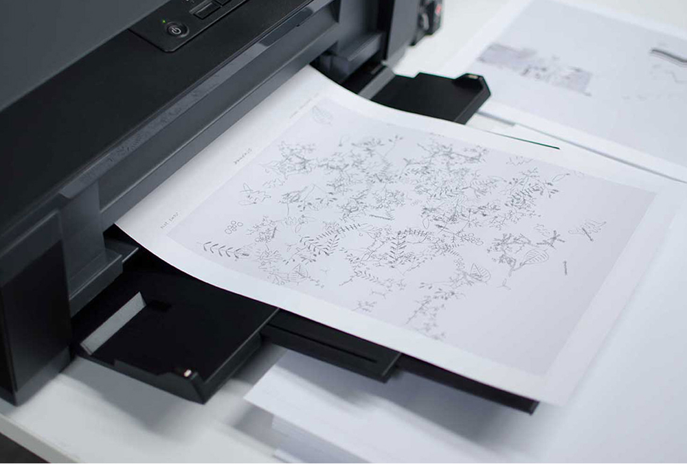
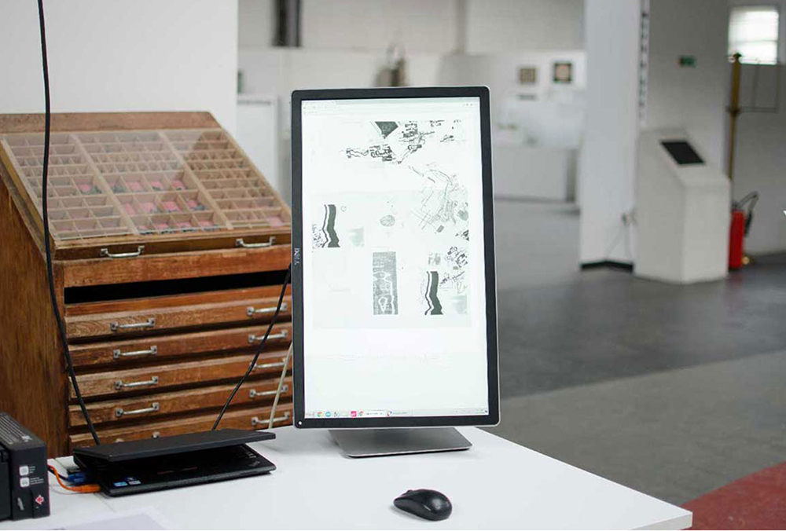

CodeArt
This is an interactive piece I made that plays around with how art gets created — but digitally! I built it using p5.js and it lets you mix and match different colors and shapes to create your own unique designs right on the screen. You can even print them out! The fun part is that you get to be part of the artwork by picking different elements and seeing what cool combinations come out of it.





